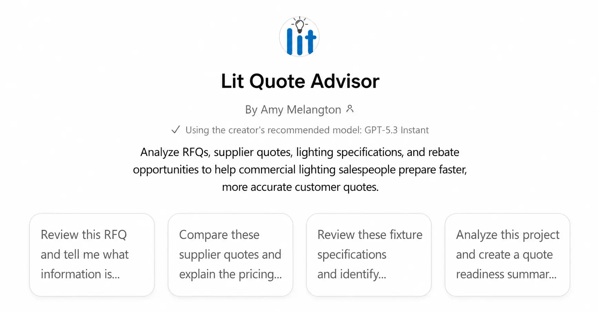
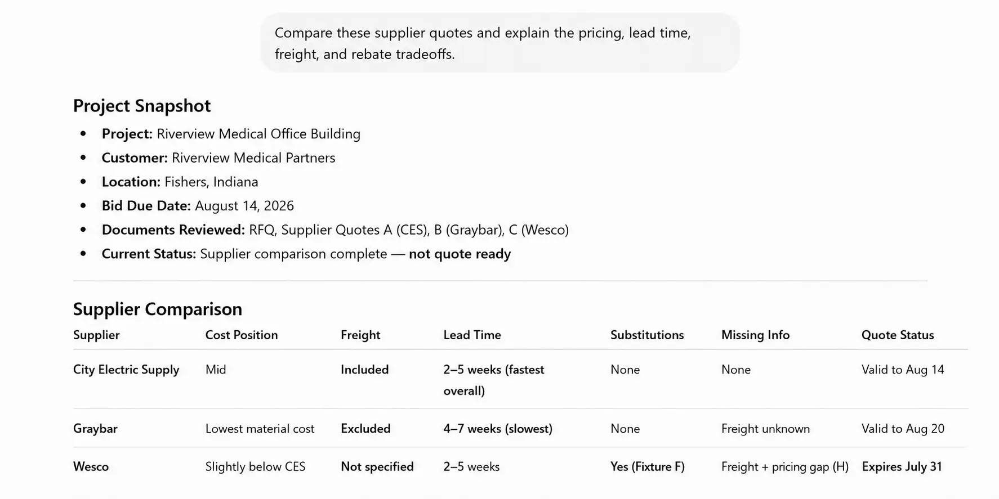

Commercial Lighting Intelligence Platform

Challenge
A lighting salesperson may receive supplier responses by email with pricing, freight, lead times, product details, and other information presented differently each time. Before the work can move into the existing quoting process, someone has to find missing information, compare supplier options, and protect the expected margin.
What we built
One review workspace that brings supplier information together before the approved information moves into the existing CRM and quoting process.
- Customer requests and product requirements
- Supplier pricing, freight, lead times, and missing information
- Product and supplier comparisons
- Margin visibility, review, and approved handoff
Why it matters
Salespeople can compare supplier responses in one place, see what information is missing, protect margin, and move the reviewed information forward without replacing the quoting tools they already use.

